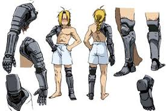

Automail
Automail es el término común para prótesis automóviles blindados que se usan en el universo de Fullmetal Alchemist. Originalmente concebido como una especie de armadura de combate motorizado, el Automail eventualmente se convirtió en lo suficientemente avanzado para funcionar como las partes del cuerpo de prótesis para amputados que desean algo más versátil que las extremidades normales de prótesis.
Funcionamiento
Vinculado directamente al sistema nervioso, una prótesis de automail generalmente no requiere una fuente de energía externa, y se puede mover a voluntad como un apéndice natural, teniendo impulsos eléctricos de los nervios al poder y regular los diversos motores eléctricos y actuadores neumáticos de dentro. Los automail se hacen generalmente con una estructura de esqueleto de completo acero con capas de acero de blindaje para proteger a los diferentes cables y maquinaria intrincada dentro, sin embargo, los avances tecnológicos han permitido que ciertos Automails actuales estén compuestos de otros materiales tales como fibra de carbono, fibra de vidrio, cromo, cobre-níquel y aleaciones de aluminio, con el fin de ser menos incómodo y más duradero que el acero en condiciones anormales.
Hay modelos especiales de automail para las bajas temperaturas. Un automail normal no las resistiría y el propietario podría morir.
Inconvenientes
Aunque podría ser útil, el conjunto de inconvenientes únicos a las prótesis de automoción es suficiente que muchos son reacios a someterse a la actualización de anexos de prótesis estándar. El proceso de instalación requiere un especialista en ingeniería bio-mecánica (es decir, tanto de ingeniería mecánica avanzada y de medicina quirúrgica), es comprensiblemente caro y especialmente doloroso, ya que ciertas partes del cuerpo a menudo deben ser amputadas aún más con el fin de adaptarse a los nuevos automails correctamente y el sistema nervioso sensible registra todos los tipos de sobre-estimulación implicados como dolor intenso.
Como usuarios de prótesis normales, los usuarios de automail están sujetos a diversos dolores y molestias que resultan de los cambios drásticos en la presión barométrica, sin embargo, otro inconveniente de las extremidades de completo acero son los efectos adversos que se producen en condiciones extremas como el calor y el frío. En temperaturas extremadamente altas, los metales que realizan y conservan el calor inducen gran incomodidad para el usuario, que debe permanecer con un objeto metálico calentado injertado en la piel, y en temperaturas extremadamente bajas, los fríos metales conductores causan que el aceite estándar deje de funcionar, así como el aceleramiento del daño a la congelación del tejido conectivo.
Personalización
Aunque los automails generalmente se utilizan como una herramienta médica avanzada para facilitar la vida de los amputados, en el país de Amestris (que ha visto un aumento significativo en el uso de automail en sus últimas dos décadas de constantes guerras sucesivas), el Automail se ha desarrollado en un lugar para el desarrollo de armas, resultando en "automail de combate". Usando varias técnicas, estas máquinas, previamente utilizadas sólo para el movimiento, han comenzado a incorporar armamento como garras con punta de diamante, cuchillas ocultas e incluso armas de fuego, a veces de buena gama a expensas de la funcionalidad normal de la extremidad.